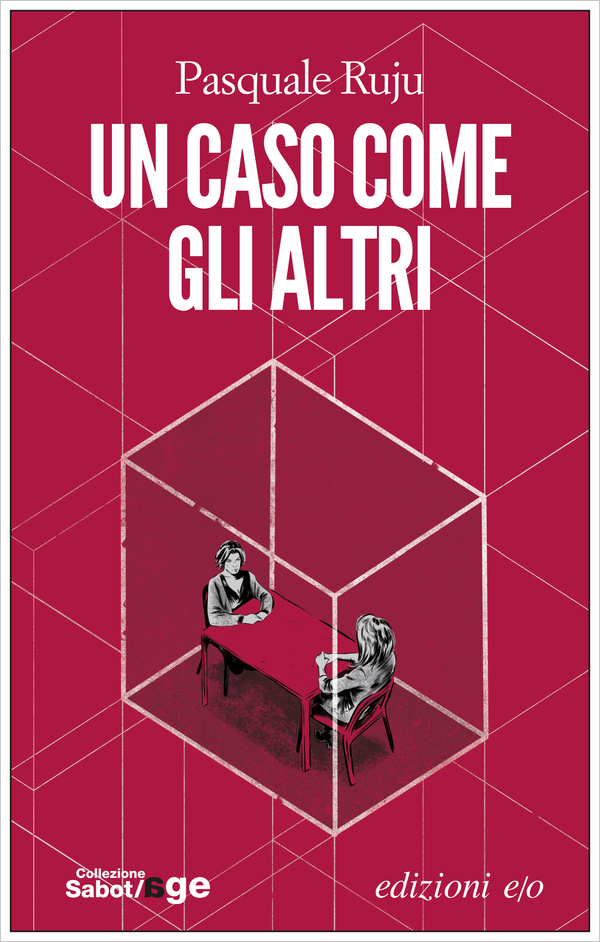

Un caso come gli altri
(recensione di Giusy Ranzini)

Autore: Pasquale Ruju
Editore: e/o
Pagine: 256
Genere: Thriller
Anno Pubblicazione: 2016
In un'anonima sala di interrogatori di un commissariato nel torinese, due donne si trovano una di fronte all'altra: Silvia ed Annamaria.
Silvia è il PM che si occupa dell'interrogatorio, Annamaria è la vedova di un boss.
Il dialogo tra le due donne ricostruisce una storia che parte dalla Calabria, per arrivare alla provincia piemontese, in un intreccio che si svolge in un periodo di vent'anni tra capi-mafia , broker e cecchini.
Nella storia, l’uso del flashback fa da padrone e il tragico epilogo è manifesto sin dall’inizio del romanzo, anzi è il punto di partenza della narrazione.
Nel mezzo della storia si colloca Annamaria, una donna bella, ma anche affascinante, sensibile e intelligente.
Annamaria è sposata con Marcello Nicotra; lui la ama e l'ha scelta come compagna di vita.
Per molto tempo lei è rimasta fedele, ma, ad un certo punto, qualcosa si è spezzato nella loro vita e nella loro unione.
Marcello è un boss della 'ndrangheta, figlio maggiore di Salvatore Nicotra, ucciso da un sicario nel corso di una guerra infinita con la famiglia Bruno.
Marcello Nicotra ha subito la stessa fine del padre: ma chi l'ha ucciso?
Non sappiamo da chi, come e perché, sappiamo che Annamaria é la chiave del mistero.
Annamaria viene interrogata da Silvia, per capire come sono andate le cose.
Anche questo romanzo, come nella tradizione dei titoli Sabot/age ci fornisce uno spaccato realistico e spietato della società italiana ponendo l’attenzione sul fenomeno dell’espansione della ‘Ndrangheta nel Nord Italia.
La scrittura è veloce, scorrevole, ma mai banale. La psicologia e la caratterizzazione dei personaggi emerge dalle loro azioni e reazioni.
La trama del libro è un intreccio perfettamente costruito alternando le informazioni di Silvia con le rivelazioni di Annamaria.
Nel corso della lettura, non mancheranno le emozioni forti e un finale a sorpresa: quando tutto sempre essere svelato, l'autore, da vero maestro, cala un colpo di scena che sconvolge ogni certezza acquisita e trascina il lettore in una serie di capovolgimenti che lo lasceranno con il fiato sospeso fino all'ultima pagina.
Meglio astenersi dallo svelare troppo e lasciare al lettore la curiosità di scoprire questo ottimo romanzo d'esordio, una voce nuova, ma molto incisiva che sicuramente avremo il piacere di ritrovare in futuro.
L'AUTORE - Pasquale Ruju, classe 1962, laureato in Architettura, ha lavorato in teatro, cinema, radio, televisione e nel doppiaggio, dando voce a personaggi di cartoni animati, soap e telefilm. Dal 1994 collabora con la Sergio Bonelli Editore in qualità di soggettista e sceneggiatore. Ha scritto oltre cento storie per albi di Tex, Dylan Dog, Nathan Never, Dampyr, Martin Mystère ed è autore delle miniserie Demian, Cassidy e Hellnoir. Un caso come gli altri è il suo primo romanzo.